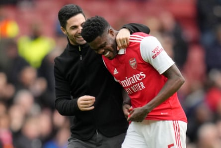
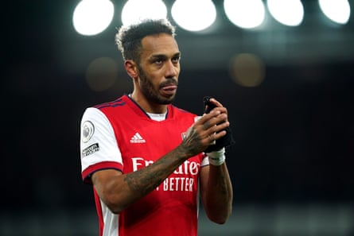

“ We are courageous in the pursuit of progress.”
“We champion our community and each other.”
“We do the right thing (even when no one is looking).”
The values and culture of Arsenal Football Club, as proclaimed on the club’s careers website. Shall we generously call that half a point out of three? Certainly you would struggle to mark Arsenal too highly on courage or intrinsic goodliness right now. But the unhappy case of Thomas Partey illustrates the lengths to which they are willing to go to champion one of their own.
You knew. I knew. Rival fans knew, even if their taunting of Partey was always delivered with the sort of gleeful relish that does not exactly scream concern for the alleged victims of sexual violence. And so of course did the staff and board of Arsenal; knew the man with whom they shared a workplace and a dressing room until last week, knew what he was accused of doing.
Care, compassion and discretion are of course utterly vital at this point. The charging of Partey on 4 July means the accusations against him will finally be heard in court in early August: five counts of rape, and one of sexual assault, involving three separate women between 2021 and 2022. Partey’s lawyer, Jenny Wiltshire of Hickman and Rose, referred in a statement to her client now “welcoming the opportunity to finally clear his name”.
And it is the word “finally” that stands out here: an acknowledgment of the protracted and often painful three-year process that has brought us to this point, during which Partey was the word English football dared not speak.
Wiltshire, of course, is deeply familiar with such matters. She was also employed by the Manchester City player Benjamin Mendy, who was cleared in 2023 of seven charges of rape, one of attempted rape and one of sexual assault. “She has often achieved positive results for her clients long before the charge stage,” reads her corporate bio. “This has caused her to be much in demand by high‑profile clients seeking a swift and discreet resolution to what, if made public, would be highly damaging allegations.”
All of which is an acknowledgment that there is always a wider consideration to such cases: establishing a verdict and getting to the truth, but also managing the optics and reputations. Partey denies all the charges against him. There is no sense in prejudging the outcome of his case before all the facts come to light. The presumption of innocence and the right to a fair trial are important legal principles in this country.
But the presumption of shining personal virtue is not, and many of Arsenal’s actions over the past three years give the impression of an organisation not simply content to employ Partey, but positively proud of doing so. Who seriously considered – at the urging of coach Mikel Arteta – offering a new contract and extending his stay at the Emirates Stadium beyond last Monday. Who regarded their talented central midfielder not as an alleged rapist but as a man to be lauded and celebrated, perhaps even a kind of victim himself.
Mikel Arteta continually emphasised the importance of Thomas Partey and wanted to extend the midfielder’s contract.Photograph: Kirsty Wigglesworth/AP
Three months after being arrested for the first time, and about a year after Arsenal were first made aware of a rape allegation against him, Partey scored a thumping goal against Tottenham in the north London derby. Afterwards, Arteta said: “For what he’s been through, and the injuries, and the effort that he put in this week, to be available for the team, I’m so happy for him. He deserves it.”
Over the subsequent years Partey would play more than 100 times for Arsenal. His goals would earn them four points in the Premier League; his defensive work probably earned them many more. His collision with Rodri in which the Spaniard injured knee ligaments may well have had a decisive influence on the 2024‑25 title. Meanwhile Arteta would continually lionise Partey’s importance to Arsenal on the pitch, and towards the end of last season reiterated that he wanted Partey to stay.
Obviously it would have been legally complex for Arsenal to terminate Partey’s contract before criminal charges had been laid. But of course there are steps that it is perfectly reasonable for a club to take against a player that do not require an absolute burden of criminal proof. Richly talented footballers such as Mesut Özil and Pierre-Emerick Aubameyang were quietly moved towards the exit for perceived off-field failings. Last year a kit manager called Mark Bonnick was sacked for social media posts he wrote about Israel.
Pierre-Emerick Aubameyang was moved towards the exit door by Arsenal for perceived off-field failings.Photograph: Martin Rickett/PA
And there were plenty of legally unproblematic options available to Arsenal here that might have offered a certain comfort to the fans now feeling a sense of betrayal at the actions of the club they love. You do not, for example, have to praise him on social media. You do not have to pay tribute to his character or resilience after “what he’s been through”. You do not have to play him 108 times or spend much of June deliberating over whether he is worth a new contract.
Who at the club made these calls and why? Who knew what, when? Who spoke out and who did not? And in supporting him so unconditionally, was it in fact Arsenal who are guilty of prejudging Partey’s case long before a jury would ever get the chance? Arsenal fans deserve answers, but it appears none are forthcoming for now. “Due to ongoing legal proceedings the club is unable to comment on the case,” they said in a statement.
And perhaps in terms of the PR, this is Arsenal’s best strategy right now: say nothing, do nothing, and hope the whole storm passes. There is a new figurehead at the base of midfield, and quite apart from being a better and younger player Martín Zubimendi offers the sensation of renewal, of turning the page, perhaps even a kind of purgation. The women are champions of Europe and will play all their home league games at the Emirates next season. There are always happier, simpler stories to tell, and Arsenal will never get tired of telling those.
Naturally we should be wary of singling out Arsenal here. There is, or should be, no room for tribal triumphalism. Many other clubs would have acted similarly in similar circumstances. In a sense Arsenal’s business-as-usual stance over the past three years is simply one of the defining characteristics of end-stage capitalism, one in which big companies ruthlessly pursue the bottom line while trumpeting their virtue.
We are courageous in the pursuit of progress. We champion our community and each other. We do the right thing (even when no one is looking). This is the moral creed of Arsenal. Their fans are still waiting for them to deliver on it.